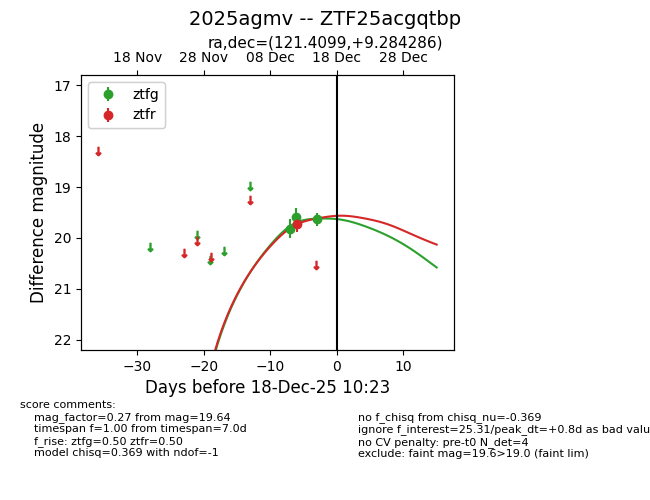
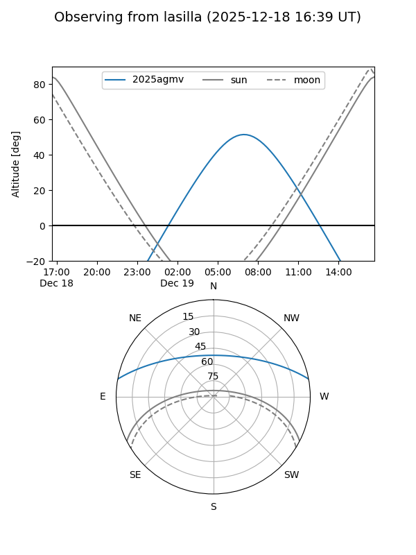
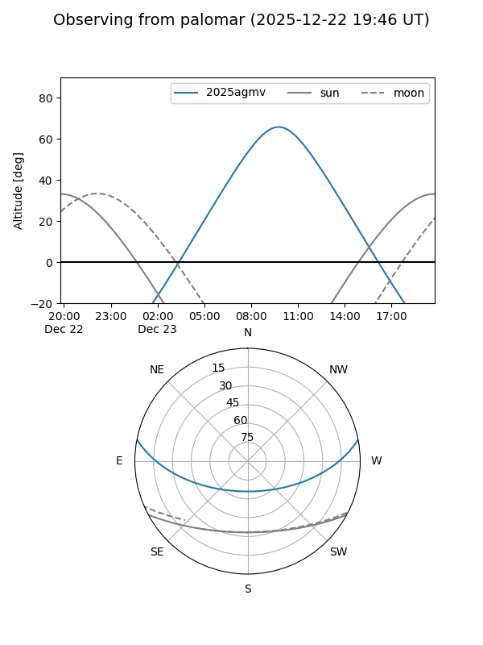
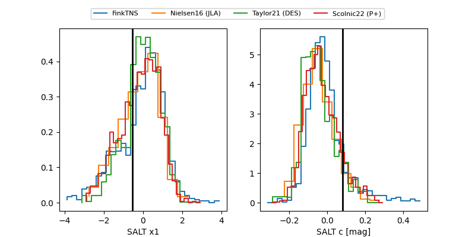

2025agmv
Target 2025agmv at 2025-12-20 12:54
Aliases and brokers:
FINK: fink-portal.org/ZTF25acgqtbp
Lasair: lasair-ztf.lsst.ac.uk/objects/ZTF25acgqtbp
ALeRCE: alerce.online/object/ZTF25acgqtbp
TNS: wis-tns.org/object/2025agmv
YSE: ziggy.ucolick.org/yse/transient_detail/2025agmv
alt names
ZTF25acgqtbp (ztf,fink_ztf)
2025agmv (tns,yse)
Coordinates:
equatorial (ra, dec) = 121.4099,+9.28429
equatorial (HMS+DMS) = 08:05:38.38,+09:17:03.43
galactic (l, b) = (212.9063,+20.67070)
Flags:
Photometry:
last ztfg=19.78, ztfr=19.70
4 ztfg, 2 ztfr detections
Lightcurve

Visibility


Additional plots
